Bude Dive Club has been teaching people to dive this coast since 1975 — never been in the water before, spent years on reef holidays but never dived the UK, or logging local dives every weekend, it doesn't matter where you're starting from. This is the Atlantic's wild side of Cornwall, not the sheltered stuff — seals, lobster and crab in every crevice, wrecks going back to the 1800s, Millook to Port Gaverne. Properly taught, properly dived.

Every new member gets a full BSAC refresher before they're signed off to dive.
Dives are called on the real swell and tide window, never guesswork.
Club loan gear covers every grade — turn up, we'll sort you out.
Every dive is buddy-paired. Nobody goes under on their own.
From your first Ocean Diver course through to Sports Diver and beyond — taught at the pace you need, not a commercial timetable. Most members reach Open Water standard in around three months.
Mostly our own north Cornwall coast, plus wreck trips to Plymouth when the swell's against us and the occasional weekend further afield — planned around what the membership fancies.
Come to a try-dive or try-snorkelling session first. No commitment — just a first taste of the water.
Not sure which fits you yet? Tell us where you're starting from and we'll point you at the right one.
Get in touch →Every site on this coast plays by its own rules — some only work on a rising tide, some need it falling, and get the window wrong and you're fighting a current instead of diving a reef. That's not something a guidebook can tell you. It's exactly what joining the local club gives you: people who already know which site works today.
This coast is why most of us got into diving in the first place — wild Atlantic reefs on the doorstep, seals and lobster a short swim from shore, and wrecks going back to the 1800s. Given the choice, we're always back here the moment conditions allow.
Bude Dive Club is the 715th branch of the British Sub-Aqua Club — the UK's governing body for recreational scuba diving, not a commercial school. We mainly dive our own north Cornwall coast; when the Atlantic swell turns rough, the club boat heads round to Plymouth for a change of scenery and its famous wrecks, until our own coast settles again.
Already qualified elsewhere? Your grade — BSAC or PADI — carries straight across, and if you haven't dived in years you'll simply join with a refresher session rather than starting over.
The minimum age to start scuba training is 14, with a parent training alongside. Beyond that: swim two pool lengths freestyle and complete a self-certification medical declaration. That's the whole fitness bar to get started.
Training follows the BSAC syllabus at whatever pace suits the trainee — our instructors aren't under commercial pressure to move you through faster than you're ready for.
Ready to start? Membership opens year-round — there's no intake to wait for.
Ask about joining →It's a small club, but a busy one — how often we're in the water depends entirely on what the Atlantic's doing that week.
Running every other week, for new divers and anyone coming back to the sport to refresh a skill before the season opens up.
When the weather's kind, club dives on home turf can happen several times a week — conditions and the tide window allowing.
Things slow down, but plenty of members keep diving straight through winter whenever conditions allow — this isn't a fair-weather club.
When the north coast swell is too much, the club boat heads south to dive Plymouth's wrecks instead — then it's straight back here once conditions settle.
New or coming back to diving? Pool sessions run every other week through spring — just let us know you're coming.
Book a taster →Interested in joining, or just have a question about the club? Drop us an email and we'll get right back to you.
hello@budediveclub.co.uk